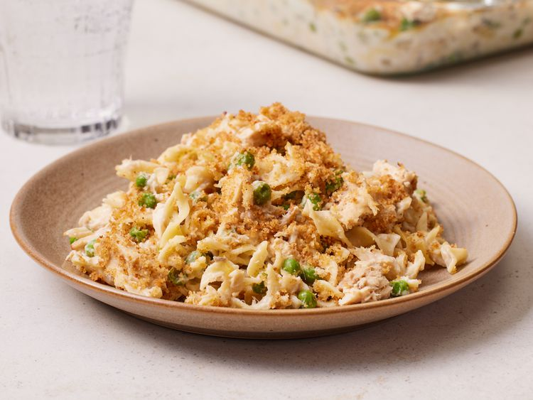

This tuna noodle casserole uses condensed cream of mushroom soup to flavor a creamy sauce that is mixed with tuna, egg noodles, and peas, topped with a crunchy bread crumb topping, and baked to perfection.
Ingredients
- 2 cups hot cooked medium egg noodles
- 1 (10.5 ounce) cans Campbell's Condensed Cream of Mushroom Soup
- 1 (10 ounce) cans tuna, drained
- 1 cup frozen peas
- ½ cup milk
- 1 tablespoon dry bread crumbs
- ½ tablespoon butter, melted
Preparation Steps
- Step 1 : Gather all ingredients and preheat the oven to 400 degrees F (200 degrees C).
- Step 2 : Stir cooked noodles, condensed soup, tuna, peas, and milk in a 3-quart casserole.
- Step 3 : Bake in the preheated oven until hot, about 30 minutes; stir well.
- Step 4 : Mix bread crumbs with melted butter in a bowl; sprinkle over tuna casserole and continue to bake until bread crumbs are golden brown and crispy, 5 minutes more.
- Step 5 : Serve and enjoy!